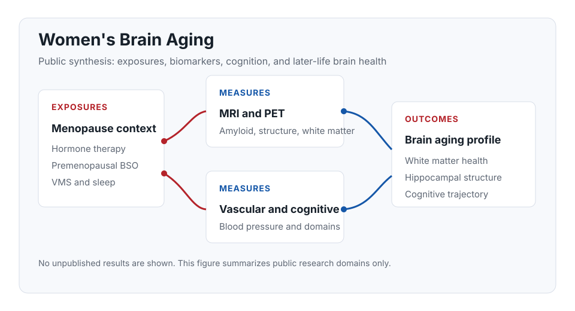

Public scope.
This note summarizes public themes and published work only. It does not
disclose submitted abstract results, current analyses, private data,
manuscript details, or collaborator-specific unpublished findings.
Why This Matters
Women's brain aging is shaped by reproductive aging, menopause timing,
surgical menopause, vascular health, sleep and vasomotor symptoms,
hormone therapy exposure, and Alzheimer-related biology. My work in
this area uses MRI, PET, blood pressure and cardiometabolic measures,
and cognitive outcomes to understand how these factors converge in
later-life brain health.
Public Evidence Map

Public Research Themes
Vascular context
Blood pressure and white matter health
Published KEEPS Continuation work examines how blood pressure and
menopausal hormone therapy context relate to later-life white
matter hyperintensities.
PET and MRI
Hormone therapy and imaging biomarkers
Public KEEPS imaging analyses connect amyloid PET, MRI, white
matter measures, and prior randomized hormone therapy exposure in
recently postmenopausal women.
Cognition
Long-term cognitive outcomes
KEEPS-Cog and KEEPS Continuation publications provide cognitive
outcomes that complement imaging and vascular measures.
Symptoms
Vasomotor symptoms and sleep
Symptoms such as night sweats, hot flashes, and insomnia are
important public research questions for understanding hippocampal
structure and broader brain-aging biology. No unpublished
submitted abstract results are described here.
Selected Published Work
-
Long-term amyloid PET and MRI outcomes in a menopausal hormone therapy trial.
Alzheimer's & Dementia, 2026. Kantarci K, Kara F, Tosakulwong N, Fought AJ, Schwarz CG, Senjem ML, et al.
-
Associations of blood pressure with white matter hyperintensities later in life; influence of short-term menopausal hormone therapy.
Menopause, 2025. Kara F, Tosakulwong N, Lesnick TG, Fought AJ, Kendall-Thomas J, et al.
-
Long-term cognitive effects of menopausal hormone therapy: findings from the KEEPS Continuation Study.
PLOS Medicine, 2024. Gleason CE, Dowling NM, Kara F, James TT, Salazar H, et al.
-
Premenopausal bilateral oophorectomy and Alzheimer's disease imaging biomarkers later in life.
Alzheimer's & Dementia, 2025. Kantarci K, Kapoor E, Geske JR, Castillo A, Fields JA, Kara F, et al.
-
Premenopausal bilateral oophorectomy and brain white matter integrity in later-life.
Alzheimer's & Dementia, 2024. Mielke MM, Frank RD, Christenson LR, Reid RI, Fields JA, Kara F, et al.
-
Long-term effects of 4 years of menopausal hormone therapy on white matter integrity.
Menopause, 2025. Faubion LL, Mak E, Kara F, Tosakulwong N, Lesnick TG, et al.
-
Association between central adiposity and cognitive domain function in recently postmenopausal women.
Menopause, 2026. James TT, Dowling NM, Simo CF, Salazar H, Van Hulle CA, et al.
-
Cardiometabolic outcomes in Kronos Early Estrogen Prevention Study continuation: 14-year follow-up of a hormone therapy trial.
Menopause, 2024. Kantarci K, Tosakulwong N, Lesnick TG, Kara F, Kendall-Thomas J, et al.
-
Association of raloxifene and tamoxifen therapy with cognitive performance, odds of mild cognitive impairment, and brain MRI markers of neurodegeneration.
Alzheimer's & Dementia, 2023. Kara F, Lohse CM, Castillo AM, Tosakulwong N, Lesnick TG, et al.